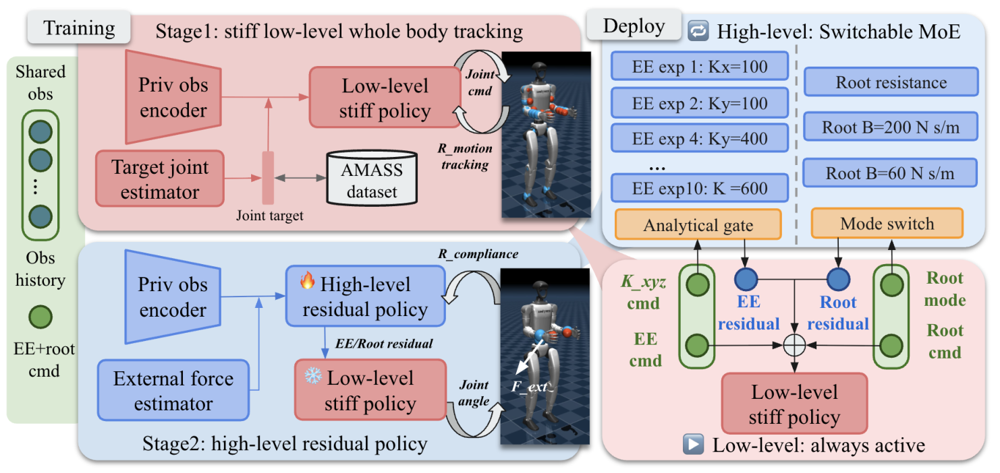

Abstract
General humanoid motion-tracking policies reproduce diverse behaviors but do not specify responses to physical interaction. Existing compliance methods mainly target selected links or end effectors, without jointly controlling axis-wise stiffness and locomotion behavior. We formulate directional and tunable end-effector (EE) compliance together with root resistance and damping modes. Our two-level hierarchical RL controller combines a stiff low-level whole-body tracking policy with high-level residual policies that modify its shared EE–root command interface. An analytical compliance-space mixture-of-experts (MoE) composes 10 experts, enabling independent, continuous stiffness commands along each Cartesian axis over 100–600 N/m. A root-mode command selects one root resistance policy or one of two root damping policies. Using privileged forces, a teacher–student pipeline jointly trains the high-level policies and a force estimator, enabling deployment without wrist force/torque sensors. Simulation evaluations show accurate full-range directional EE compliance, workspace consistency, and distinct root modes. Real-world tasks further demonstrate directional EE compliance, online adjustment of EE stiffness, and concurrent EE–root compliance through the shared interface.
Video
System Framework
